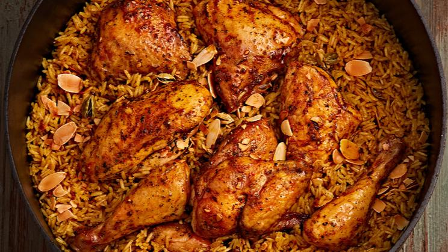
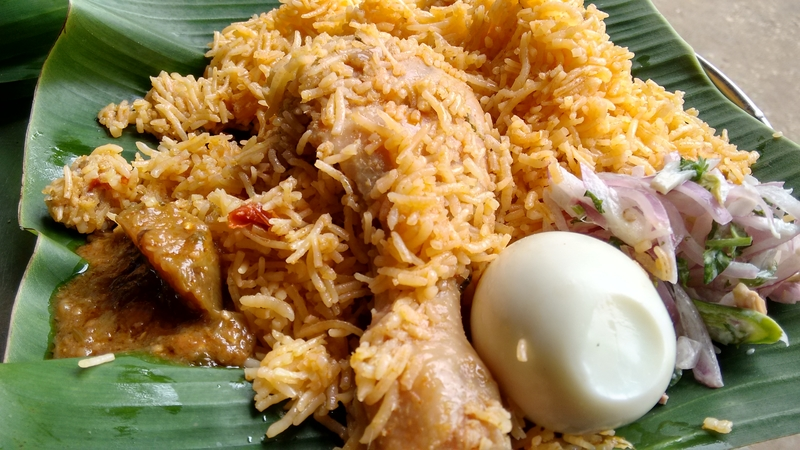
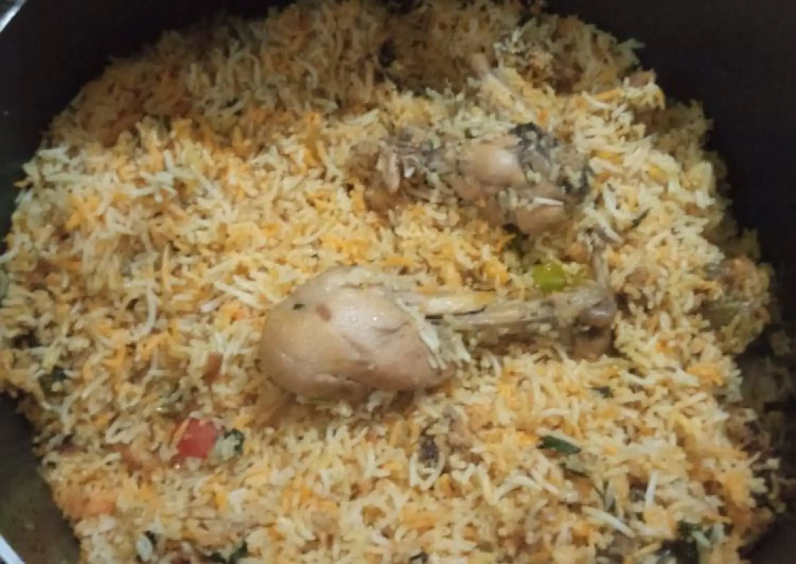

CHICKEN BIRYANI

Ingredients
- Chicken
- 200g tomato
- 400g onion
- Bay leaves
- Cardomam
- Cloves
- Cinnamonstick
- Staranise
- Sajeera
- 1kg Basmathi rice
- 800g chicken
- 25g chilli powder
- 50g ginger garlic paste
- Coriander,curry leaves chopped 75g
- Oil 150ml
- Garam masala 25g
- Biryani masala 50g
- Ghee 100g
- Lemon 2 piees
Calorie Chart
| Nutrients |
Quantity |
| Carbs |
31g |
| Dietary Fiber |
1.4g |
| sugar |
3.2g |
| Fat |
9.4g |
| Saturated |
1.7g |
| Polyunsaturated |
4.5g |
| Protein |
20g |
| Sodium |
419mg |
| Potassium |
462mg |
| cholestrol |
48mg |
| vitamin A |
6% |
| vitamin C |
6% |
| calcium |
9% |
| Iron |
16% |



FUN FACTS
- The word ‘biryani’ is derived from a Persian word, birian, which means fried before cooking.
- In 1398, the conqueror of Turk Mongol, Timur brought Biryani to India.
- Biryani is a symbol of a country that takes differences and divergences and then merges them into one India.